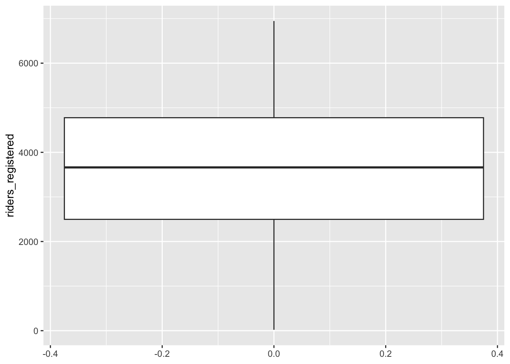

# Load packages and import data
library(readr)
library(ggplot2)
library(dplyr)
lifts <- read_csv("https://mac-stat.github.io/data/powerlifting.csv")
lifts <- lifts %>%
mutate(SWR = TotalKg/BodyweightKg)Simple linear regression: formalizing concepts
Notes and in-class exercises
Notes
- You can download a template file to work with here.
- File organization: Save this file in the “Activities” subfolder of your “STAT155” folder.
Learning goals
By the end of this lesson, you should be able to:
- Differentiate between a response / outcome variable and a predictor / explanatory variable
- Write a model formula for a simple linear regression model with a quantitative predictor
- Write R code to fit a linear regression model
- Interpret the intercept and slope coefficients in a simple linear regression model with a quantitative predictor
- Compute expected / predicted / fitted values and residuals from a linear regression model formula
- Interpret predicted values and residuals in the context of the data
- Explain the connection between residuals and the least squares criterion
Readings and videos
Before class you should have read and/or watched:
- Reading: Sections 2.8, 3.1-3.3, 3.6 in the STAT 155 Notes
- Videos:
- Summarizing the Relationships between Two Quantitative Variables (Time: 12:12)
- Introduction to Linear Models (Time: 10:57)
- Method of Least Squares (Time: 5:10)
- Interpretation of Intercept and Slope (Time: 11:09)
- R Code for Fitting a Linear Model (Time: 11:07)
Review
Last class we were looking at powerlifting data.
Guiding question: Are bigger (heavier) lifters stronger for their weight (SWR = total lifted/bodyweight)?
ggplot(lifts, aes(x = BodyweightKg, y = SWR)) +
geom_point() +
geom_smooth()`geom_smooth()` using method = 'gam' and formula = 'y ~ s(x, bs = "cs")'Warning: Removed 8752 rows containing non-finite outside the scale range
(`stat_smooth()`).Warning: Removed 8752 rows containing missing values or values outside the scale range
(`geom_point()`).Observations:
- The relationship looks slightly curved: positively correlated at first and then negatively correlated afterward.
- The strong positive slope at the beginning and strong negative slope at the end are caused by a few outlier observations and are less trustworthy.
- The height of the gray band around the blue trend represents uncertainty about the value of the blue line at that location. The band is thicker towards the ends of the plot.
- There may be a slightly positive relationship between 50kg and 80kg, but afterward the relationship looks clearly negative.
A natural next question to ask is:
How steep are the upsloping and downsloping parts of this trend?
Because our pre-class material focused on single lines as models, let’s focus on the downslope.
We can focus on lifters above 80kg using the filter() function from the dplyr package for data wrangling. filter() selectively keeps rows based on a condition:
lifts_subs <- lifts %>%
filter(BodyweightKg > 80)Let’s look at the relationship again with a linear smoothing line (a line of best fit):
ggplot(lifts_subs, aes(x = BodyweightKg, y = SWR)) +
geom_point() +
geom_smooth(method = "lm")`geom_smooth()` using formula = 'y ~ x'Warning: Removed 3863 rows containing non-finite outside the scale range
(`stat_smooth()`).Warning: Removed 3863 rows containing missing values or values outside the scale range
(`geom_point()`).The line is governed by a formula that looks like:
\[ y = a + bx \]
We can rewrite that formula for our context, where SWR is our outcome or response variable (the variable we’re interested in explaining) and BodyweightKg is a predictor or explanatory variable:
\[ \text{SWR} = a + b \,\text{BodyweightKg} \]
“Best” is determined by the least squares criterion: we find the values of \(a\) and \(b\) such that we minimize the sum of squared residuals. A residual is the vertical distance from a point to the line:
\[ \text{residual} = \text{observed y} - \text{predicted y} \]
In other words, a residual quantifies the error in our model. The idea with the least squares criterion is that we want our line to minimize these errors.
Note that we will be writing the formula for our line in a slightly different way. Instead of:
\[ \text{SWR} = a + b \,\text{BodyweightKg} \]
We will be writing model formula as such:
\[ E[\text{SWR} \mid \text{BodyweightKg}] = \beta_0 + \beta_1\text{BodyweightKg} \]
- The \(E[]\) is read as “expected value” which is another way to describe the average value.
- Expected value is important in describing our line because our line describes the trend in our data on average. It does not describe what to expect for any individual case.
- The \(E[\text{SWR} \mid \text{BodyweightKg}]\) part is read as “expected value of SWR given body weight”. This is saying that the average value of SWR is function of body weight.
- The expected value shows up in the way that we interpret the intercept and slope in our line:
- Intercept \(\beta_0\): The average SWR for someone who weights 0kg. (Not meaningful! But the intercept is important for placing our line vertically)
- Slope \(\beta_1\): Every 1kg increase in body weight is linked with a \(\beta_1\) change in SWR on average.
Let’s see these interpretations with numbers:
mod <- lm(SWR ~ BodyweightKg, data = lifts_subs)
coef(summary(mod)) Estimate Std. Error t value Pr(>|t|)
(Intercept) 6.44448472 0.0571735021 112.71803 0.000000e+00
BodyweightKg -0.02046372 0.0005710373 -35.83604 1.538229e-277- The “Estimate” column contains the estimated coefficients in our model (the intercept and slope).
- Full model formula: \(E[\text{SWR} \mid \text{BodyweightKg}] = 6.44 - 0.02\,\text{BodyweightKg}\)
- Intercept \(\beta_0\): The average SWR for someone who weights 0kg is 6.44. (Not meaningful! No one weighs 0kg!)
- Slope \(\beta_1\): Every 1kg increase in body weight is linked with a 0.02 decrease in SWR. So a 10kg increase in body weight is linked with a 0.2 decrease in SWR on average. Interpreting this coefficient addresses our guiding question.
- Key features of slope interpretation:
- Units: Provided units of kg for the predictor. Note that there are no units for SWR because we’re dividing kilograms lifted by kilograms of body weight.
- Averages vs. individuals: On average lifters who differ by 1kg in body weight will differ in SWR by 0.02, but any given pair of lifters who differ by 1kg in body weight will not always differ in SWR by 0.02.
- Causal language: We want to be careful to not say “Increasing your body weight by 1 kg will decrease your SWR by 0.02 on average” because there may be other factors at play.
- For example, maybe heavier lifters tend to also use equipment that helps them lift more while lighter lifters don’t.
- This might make heavier lifters seem stronger than they are.
- When accounting for equipment usage, the relationship between body weight and SWR might change.
We can use our estimated model formula to get predictions and residuals.
What would we expect the SWR to be for a lifter who weighs 100kg? (On average, what is the SWR for a 100kg lifter?)
6.44 - 0.02 * 100[1] 4.44On average, a lifter who weighs 100kg is expected to have a SWR of 4.44.
Suppose that Alice is a 100kg lifter who has a SWR of 5.5. What would her residual be?
# residual = observed y - predicted y
5.5 - 4.44[1] 1.06We underpredict Alice’s SWR by 1.06.
Exercises
Context: Today we’ll explore data from Capital Bikeshare, a company in Washington DC. Our main goal will be to explore daily ridership among registered users, as measured by riders_registered. Read in the data below.
# Load packages and import data
library(readr)
library(ggplot2)
library(dplyr)
bikes <- read_csv("https://mac-stat.github.io/data/bikeshare.csv")Exercise 1: Get to know the data
Create a new code chunk to look at the first few rows of the data and learn how much data (in terms of cases and variables) we have.
- What does a case represent?
- How many and what kinds of variables do we have?
- Thinking about the who, what, when, where, why, and how of this data, which of the 5W’s + H seem most relevant to our investigations? Explain your thoughts.
Exercise 2: Get to know the outcome/response variable
Let’s get acquainted with the riders_registered variable.
- Construct an appropriate plot to visualize the distribution of this variable, and compute appropriate numerical summaries.
- Write a good paragraph interpreting the plot and numerical summaries.
Exercise 3: Explore the relationship between ridership and temperature
We’d like to understand how daily ridership among registered users relates with the temperature that it feels like that day (temp_feel).
- What type of plot would be appropriate to visualize this relationship? Sketch and describe what you expect this plot to look like.
- Create an appropriate plot using
ggplot(). How does the plot compare to what you predicted? - Add the following two lines after your plot to add a linear (blue) and curved (red) smoothing line. What do you notice? Is a simple linear regression model appropriate for this data?
# Add a red straight line of best fit and a blue curve of best fit
YOUR_PLOT +
geom_smooth(method = "lm", color = "red", se = FALSE) +
geom_smooth(color = "blue", se = FALSE)Exercise 4: Filtering our data
The relationship between registered riders and temperature looks linear below 80 degrees. We can use the filter() function from the dplyr package to subset our cases. (We’ll learn techniques soon for handling this nonlinear relationship.)
If we wanted to only keep cases where registered ridership was greater than 2000, we would use the following code:
# The %>% is called a "pipe" and feeds what comes before it
# into what comes after (bikes data is "fed into" the filter() function)
NEW_DATASET_NAME <- bikes %>%
filter(riders_registered > 2000)Adapt the example above to create a new dataset called bikes_sub that only keeps cases where the felt temperature is less than 80 degrees.
Exercise 5: Model fitting and coefficient interpretation
Let’s fit a simple linear regression model and examine the results. Step through code chunk slowly, and make note of new code.
# Construct and save the model as bike_mod
# What's the purpose of "riders_registered ~ temp_feel"?
# What's the purpose of "data = bikes_sub"?
bike_mod <- lm(riders_registered ~ temp_feel, data = bikes_sub)# A long summary of the model stored in bike_mod
summary(bike_mod)# A simplified model summary
coef(summary(bike_mod))Using the model summary output, complete the following model formula:
E[riders_registered | temp_feel] = ___ + ___ * temp_feelInterpret the intercept in terms of the data context. Make sure to use non-causal language, include units, and talk about averages rather than individual cases. Is the intercept meaningful in this situation?
Interpret the slope in terms of the data context. Make sure to use non-causal language, include units, and talk about averages rather than individual cases.
Exercise 6: Predictions and residuals
On August 17, 2012, the temp_feel was 53.816 degrees and there were 5665 riders. We can get data for this day using the filter() and select() dplyr functions. Note, but don’t worry about the syntax – we haven’t learned this yet:
bikes_sub %>%
filter(date == "2012-08-17") %>%
select(riders_registered, temp_feel) Peak back at the scatterplot. Identify which point corresponds to August 17, 2012. Is it close to the trend? Were there more riders than expected or fewer than expected?
Use your model formula from the previous exercise to predict the ridership on August 17, 2012 from the temperature on that day. (That is, where do days with this temperature fall on the model trend line? How many registered riders would we expect on a 53.816 degree day?)
Check your part b calculation using the
predict()function. Take careful note of the syntax – there’s a lot going on!
# What is the purpose of newdata = ___???
predict(bike_mod, newdata = data.frame(temp_feel = 53.816))Calculate the residual or prediction error. How far does the observed ridership fall from the model prediction?
residual = observed y - predicted y = ???
Are positive residuals above or below the trend line? When we have positive residuals, does the model over- or under-estimate ridership? Repeat these questions for negative residuals.
For an 85 degree day, how many registered riders would we expect? Do you think it’s a good idea to make this prediction? (Revisit the visualization and filtering we did in Exercises 3 and 4.)
Exercise 7: Changing temperature units (CHALLENGE)
Suppose we had measured temperature in degrees Celsius rather than degrees Fahrenheit. How do you think our intercept and slope estimates, and their coefficient interpretations, would change?
Reflection
Statistics is a particular kind of language and collection of tools for channeling curiosity to improve our world.
Review the learning objectives at the top of this file and the flow of today’s activity. How do the concepts we practiced today facilitate curiosity?
Response: Put your response here.
Render your work
- Click the “Render” button in the menu bar for this pane (blue arrow pointing right). This will create an HTML file containing all of the directions, code, and responses from this activity. A preview of the HTML will appear in the browser.
- Scroll through and inspect the document to check that your work translated to the HTML format correctly.
- Close the browser tab.
- Go to the “Background Jobs” pane in RStudio and click the Stop button to end the rendering process.
- Navigate to your “Activities” subfolder within your “STAT155” folder and locate the HTML file. You can open it again in your browser to double check.
Additional Practice
Exercise 8: Ridership and windspeed
Let’s pull together everything that you’ve practiced in the preceding exercises to investigate the relationship between riders_registered and windspeed. Go back to using the bikes dataset (instead of bikes_sub) because we no longer need to only keep days less than 80 degrees.
# Construct and interpret a visualization of this relationship
# Include a representation of the relationship trend
# Use lm to construct a model of riders_registered vs windspeed
# Save this as bike_mod2
# Get a short summary of this model- Summarize your observations from the visualizations.
- Write out a formula for the model trend.
- Interpret both the intercept and the windspeed coefficient. (Note: What does a negative slope indicate?)
- Use this model to predict the ridership on August 17, 2012 and calculate the corresponding residual. (Note: You’ll first need to find the windspeed on this date!)
Exercise 9: Data drills (filter, select, summarize)
This exercise is designed to help you keep building your dplyr skills. These skills are important to data cleaning and digging, which in turn is important to really making meaning of our data. We’ll work with a simpler set of 10 data points:
new_bikes <- bikes %>%
select(date, temp_feel, humidity, riders_registered, day_of_week) %>%
head(10)Verb 1: summarize
Thus far, in the dplyr grammar you’ve seen 3 verbs or action words: summarize(), select(), filter(). Try out the following code and then summarize the point of the summarize() function:
new_bikes %>%
summarize(mean(temp_feel), mean(humidity))Verb 2: select
Try out the following code and then summarize the point of the select() function:
new_bikes %>%
select(date, temp_feel)new_bikes %>%
select(-date, -temp_feel)Verb 3: filter
Try out the following code and then summarize the point of the filter() function:
new_bikes %>%
filter(riders_registered > 850)new_bikes %>%
filter(day_of_week == "Sat")new_bikes %>%
filter(riders_registered > 850, day_of_week == "Sat")Exercise 10: Your turn
Use dplyr verbs to complete each task below.
# Keep only information about the humidity and day of week
# Keep only information about the humidity and day of week using a different approach
# Keep only information for Sundays
# Keep only information for Sundays with temperatures below 50
# Calculate the maximum and minimum temperaturesSolutions
Exercise 1: Get to know the data
dim(bikes)[1] 731 15head(bikes)# A tibble: 6 × 15
date season year month day_of_week weekend holiday temp_actual
<date> <chr> <dbl> <chr> <chr> <lgl> <chr> <dbl>
1 2011-01-01 winter 2011 Jan Sat TRUE no 57.4
2 2011-01-02 winter 2011 Jan Sun TRUE no 58.8
3 2011-01-03 winter 2011 Jan Mon FALSE no 46.5
4 2011-01-04 winter 2011 Jan Tue FALSE no 46.8
5 2011-01-05 winter 2011 Jan Wed FALSE no 48.7
6 2011-01-06 winter 2011 Jan Thu FALSE no 47.1
# ℹ 7 more variables: temp_feel <dbl>, humidity <dbl>, windspeed <dbl>,
# weather_cat <chr>, riders_casual <dbl>, riders_registered <dbl>,
# riders_total <dbl>- A case represents a day of the year.
- We have 15 variables broadly concerning weather, day of week information, whether the day is a holiday.
- Lots of answers are reasonable here! When and where seem to be particularly relevant because this is for a rideshare based in Washington DC with data from 2011-2012. Ridership likely changes a lot from city to city and over time.
Exercise 2: Get to know the outcome/response variable
The distribution of the riders_registered variable looks fairly symmetric. On average there are about 3600 registered riders per day (mean = 3656, median = 3662). On any given day, the number of registered riders is about 1560 from the mean. There seem to be a small number of low outliers (minimum ridership was 20).
ggplot(bikes, aes(x = riders_registered)) +
geom_histogram()`stat_bin()` using `bins = 30`. Pick better value with `binwidth`.ggplot(bikes, aes(y = riders_registered)) +
geom_boxplot()
summary(bikes$riders_registered) Min. 1st Qu. Median Mean 3rd Qu. Max.
20 2497 3662 3656 4776 6946 bikes %>%
summarize(sd(riders_registered))# A tibble: 1 × 1
`sd(riders_registered)`
<dbl>
1 1560.Exercise 3: Explore the relationship between ridership and temperature
We’d like to understand how daily ridership among registered users relates with the temperature that it feels like that day (temp_feel).
- Scatterplot (outcome and predictor are both quantitative)
ggplot(bikes, aes(x = temp_feel, y = riders_registered)) +
geom_point()- If we only displayed the red line of best fit on the plot, we might miss the slight downward trend at the highest temperatures that we can see more clearly with the blue curve of best fit. A linear model is not appropriate if fit to the whole range of the data, but there does seem to be a linear relationship between ridership and temperature below 80 degrees Fahrenheit.
# Add a red straight line of best fit and a blue curve of best fit
ggplot(bikes, aes(x = temp_feel, y = riders_registered)) +
geom_point() +
geom_smooth(method = "lm", color = "red", se = FALSE) +
geom_smooth(color = "blue", se = FALSE)`geom_smooth()` using formula = 'y ~ x'
`geom_smooth()` using method = 'loess' and formula = 'y ~ x'Exercise 4: Filtering our data
# The %>% is called a "pipe" and feeds what comes before it
# into what comes after (bikes data is "fed into" the filter() function)
bikes_sub <- bikes %>%
filter(temp_feel < 80)Exercise 5: Model fitting and coefficient interpretation
Let’s fit a simple linear regression model and examine the results. Step through code chunk slowly, and make note of new code.
# Construct and save the model as bike_mod
# What's the purpose of "riders_registered ~ temp_feel"?
# What's the purpose of "data = bikes_sub"?
bike_mod <- lm(riders_registered ~ temp_feel, data = bikes_sub)# A long summary of the model stored in bike_mod
summary(bike_mod)
Call:
lm(formula = riders_registered ~ temp_feel, data = bikes_sub)
Residuals:
Min 1Q Median 3Q Max
-3681.8 -928.3 -98.6 904.9 3496.7
Coefficients:
Estimate Std. Error t value Pr(>|t|)
(Intercept) -2486.412 421.379 -5.901 7.37e-09 ***
temp_feel 86.493 6.464 13.380 < 2e-16 ***
---
Signif. codes: 0 '***' 0.001 '**' 0.01 '*' 0.05 '.' 0.1 ' ' 1
Residual standard error: 1267 on 428 degrees of freedom
Multiple R-squared: 0.2949, Adjusted R-squared: 0.2933
F-statistic: 179 on 1 and 428 DF, p-value: < 2.2e-16# A simplified model summary
coef(summary(bike_mod)) Estimate Std. Error t value Pr(>|t|)
(Intercept) -2486.41180 421.379174 -5.900652 7.368345e-09
temp_feel 86.49251 6.464247 13.380135 2.349753e-34E[riders_registered | temp_feel] = -2486.41180 + 86.49251 * temp_feel
Intercept interpretation: On days that feel like 0 degrees Fahrenheit, we can expect an average of -2486.41180 riders—a negative number of riders doesn’t make sense! This results because of extrapolation—0 degrees is so far below the minimum temperature in the data. We only have information on the relationship between ridership and temperature in the ~40-100 degree range and have no idea what that relationship looks like outside that range.
Slope interpretation: Every 1 degree increase in feeling temperature is associated with an average of about 86 more riders.
Exercise 6: Predictions and residuals
On August 17, 2012, the temp_feel was 53.816 degrees and there were 5665 riders. We can get data for this day using the filter() and select() dplyr functions. Note, but don’t worry about the syntax – we haven’t learned this yet:
bikes_sub %>%
filter(date == "2012-08-17") %>%
select(riders_registered, temp_feel) # A tibble: 1 × 2
riders_registered temp_feel
<dbl> <dbl>
1 5665 53.8More riders than expected – the point is far above the trend line
-2486.41180 + 86.49251 * 53.816 = 2168.269
We get the same result with
predict():
# What is the purpose of newdata = ___???
predict(bike_mod, newdata = data.frame(temp_feel = 53.816)) 1
2168.269 residual = 5665 - 2168.269 = 3496.731. On August 17, 2012, there were 3496.731 more riders than would be expected from our model.
- Positive residuals are above the trend line—we under-estimate ridership.
- Negative residuals are below the trend line—we over-estimate ridership.
On an 85 degree day, we would predict 4865.452 riders. Even though we can compute this prediction, it’s not a good idea because of extrapolation–the data that we used to fit our model was filtered to days less than 80 degrees.
-2486.41180 + 86.49251 * 85[1] 4865.452predict(bike_mod, newdata = data.frame(temp_feel = 85)) 1
4865.451 Exercise 7: Changing temperature units (CHALLENGE)
If we had measured temperature in degrees Celsius rather than degrees Fahrenheit, both the intercept and slope should change. The intercept would now represent 0 degrees Celsius (32 degrees Fahrenheit) and a one unit change in temperature is now 1 degree Celsius (1.8 degrees Fahrenheit).
Exercise 8: Ridership and windspeed
Let’s pull together everything that you’ve practiced in the preceding exercises to investigate the relationship between riders_registered and windspeed. Go back to using the bikes dataset (instead of bikes_sub) because we no longer need to only keep days less than 80 degrees.
# Construct and interpret a visualization of this relationship
# Include a representation of the relationship trend
ggplot(bikes, aes(x = windspeed, y = riders_registered)) +
geom_point() +
geom_smooth(method = "lm", color = "red", se = FALSE) +
geom_smooth(color = "blue", se = FALSE)`geom_smooth()` using formula = 'y ~ x'
`geom_smooth()` using method = 'loess' and formula = 'y ~ x'
# Use lm to construct a model of riders_registered vs windspeed
# Save this as bike_mod2
bike_mod2 <- lm(riders_registered ~ windspeed, data = bikes)
# Get a short summary of this model
coef(summary(bike_mod2)) Estimate Std. Error t value Pr(>|t|)
(Intercept) 4490.09761 149.65992 30.002005 2.023179e-129
windspeed -65.34145 10.86299 -6.015053 2.844453e-09There’s a weak, negative relationship – ridership tends to be smaller on windier days.
E[riders_registered | windspeed] = 4490.09761 - 65.34145 windspeed
- Intercept: On days with no wind, we’d expect around 4490 riders. (0 is a little below the minimum of the observed data, but not by much! So extrapolation in interpreting the intercept isn’t a huge concern.)
- Slope: Every 1mph increase in windspeed is associated with a ridership decrease of 65 riders on average.
See the code below to predict ridership on August 17, 2012 and calculate the corresponding residual. Note that this residual is smaller than the residual from the temperature model (that residual was 3496.731). This indicates that August 17 was more of an outlier in ridership given the temperature than the windspeed.
bikes %>%
filter(date == "2012-08-17") %>%
select(riders_registered, windspeed)# A tibble: 1 × 2
riders_registered windspeed
<dbl> <dbl>
1 5665 15.5# prediction
4490.09761 - 65.34145 * 15.50072[1] 3477.258# residual
5665 - 3477.258[1] 2187.742Exercise 9: Data drills (filter, select, summarize)
This exercise is designed to help you keep building your dplyr skills. These skills are important to data cleaning and digging, which in turn is important to really making meaning of our data. We’ll work with a simpler set of 10 data points:
new_bikes <- bikes %>%
select(date, temp_feel, humidity, riders_registered, day_of_week) %>%
head(10)Verb 1: summarize
summarize() calculates numerical summaries of variables (columns).
new_bikes %>%
summarize(mean(temp_feel), mean(humidity))# A tibble: 1 × 2
`mean(temp_feel)` `mean(humidity)`
<dbl> <dbl>
1 52.0 0.544Verb 2: select
select() selects variables (columns).
new_bikes %>%
select(date, temp_feel)# A tibble: 10 × 2
date temp_feel
<date> <dbl>
1 2011-01-01 64.7
2 2011-01-02 63.8
3 2011-01-03 49.0
4 2011-01-04 51.1
5 2011-01-05 52.6
6 2011-01-06 53.0
7 2011-01-07 50.8
8 2011-01-08 46.6
9 2011-01-09 42.5
10 2011-01-10 45.6new_bikes %>%
select(-date, -temp_feel)# A tibble: 10 × 3
humidity riders_registered day_of_week
<dbl> <dbl> <chr>
1 0.806 654 Sat
2 0.696 670 Sun
3 0.437 1229 Mon
4 0.590 1454 Tue
5 0.437 1518 Wed
6 0.518 1518 Thu
7 0.499 1362 Fri
8 0.536 891 Sat
9 0.434 768 Sun
10 0.483 1280 Mon Verb 3: filter
filter() keeps only days (rows) that meet the given condition(s).
new_bikes %>%
filter(riders_registered > 850)# A tibble: 7 × 5
date temp_feel humidity riders_registered day_of_week
<date> <dbl> <dbl> <dbl> <chr>
1 2011-01-03 49.0 0.437 1229 Mon
2 2011-01-04 51.1 0.590 1454 Tue
3 2011-01-05 52.6 0.437 1518 Wed
4 2011-01-06 53.0 0.518 1518 Thu
5 2011-01-07 50.8 0.499 1362 Fri
6 2011-01-08 46.6 0.536 891 Sat
7 2011-01-10 45.6 0.483 1280 Mon new_bikes %>%
filter(day_of_week == "Sat")# A tibble: 2 × 5
date temp_feel humidity riders_registered day_of_week
<date> <dbl> <dbl> <dbl> <chr>
1 2011-01-01 64.7 0.806 654 Sat
2 2011-01-08 46.6 0.536 891 Sat new_bikes %>%
filter(riders_registered > 850, day_of_week == "Sat")# A tibble: 1 × 5
date temp_feel humidity riders_registered day_of_week
<date> <dbl> <dbl> <dbl> <chr>
1 2011-01-08 46.6 0.536 891 Sat Exercise 10: Your turn
Use dplyr verbs to complete each task below.
# Keep only information about the humidity and day of week
new_bikes %>%
select(humidity, day_of_week)# A tibble: 10 × 2
humidity day_of_week
<dbl> <chr>
1 0.806 Sat
2 0.696 Sun
3 0.437 Mon
4 0.590 Tue
5 0.437 Wed
6 0.518 Thu
7 0.499 Fri
8 0.536 Sat
9 0.434 Sun
10 0.483 Mon # Keep only information about the humidity and day of week using a different approach
new_bikes %>%
select(-date, -temp_feel, -riders_registered)# A tibble: 10 × 2
humidity day_of_week
<dbl> <chr>
1 0.806 Sat
2 0.696 Sun
3 0.437 Mon
4 0.590 Tue
5 0.437 Wed
6 0.518 Thu
7 0.499 Fri
8 0.536 Sat
9 0.434 Sun
10 0.483 Mon # Keep only information for Sundays
new_bikes %>%
filter(day_of_week == "Sun")# A tibble: 2 × 5
date temp_feel humidity riders_registered day_of_week
<date> <dbl> <dbl> <dbl> <chr>
1 2011-01-02 63.8 0.696 670 Sun
2 2011-01-09 42.5 0.434 768 Sun # Keep only information for Sundays with temperatures below 50
new_bikes %>%
filter(day_of_week == "Sun", temp_feel < 50)# A tibble: 1 × 5
date temp_feel humidity riders_registered day_of_week
<date> <dbl> <dbl> <dbl> <chr>
1 2011-01-09 42.5 0.434 768 Sun # Calculate the maximum and minimum temperatures
new_bikes %>%
summarize(min(temp_feel), max(temp_feel))# A tibble: 1 × 2
`min(temp_feel)` `max(temp_feel)`
<dbl> <dbl>
1 42.5 64.7